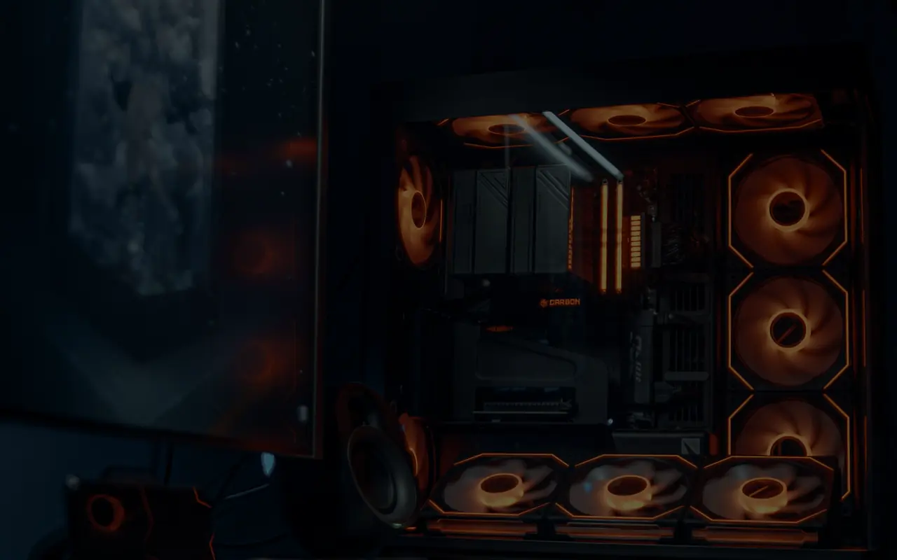

Startup & background load
Apps, services and Windows tasks that keep using resources when they don’t need to.
VOLTTECH SERVICE / PC PERFORMANCE · PRETORIA
Slow startup? Stutters? FPS drops? Fans working overtime? We’ll check what’s actually holding the system back before suggesting upgrades.
NORTHERN PRETORIA · WONDERBOOM · PRETORIA NORTH

START WITH WHAT YOU NOTICE
Tap the closest match. We’ll use that as the starting point.
SELECTED ISSUE
Startup apps, background services, storage health and Windows configuration can all drag out boot time. We check which one is actually responsible.
WHAT WE CHECK
Performance problems are usually a mix of software, heat, storage or hardware limits. We separate them instead of applying random “boost” settings.
Apps, services and Windows tasks that keep using resources when they don’t need to.
Drive health, free space, SSD/NVMe behaviour and storage bottlenecks that make the whole system feel slow.
CPU and GPU temperatures, throttling, airflow and cooling problems that reduce sustained performance.
Drivers, power settings, background load and sensible configuration changes for smoother real-world performance.
PRICING GUIDE
This covers common performance diagnosis and optimisation work. If the real cause turns out to be failing hardware or another repair, we’ll explain that before additional work is done.
HOW IT WORKS
We look at startup load, temperatures, storage, drivers and system behaviour.
We change what actually matters instead of stacking one-click tweaks.
Where useful, we compare benchmarks, temperatures or responsiveness before and after.
WHY VOLTTECH
A slow PC might need a simple cleanup, better cooling, healthier storage or an upgrade. We’ll tell you which one makes sense instead of pretending every system needs new parts.
LOCAL SERVICE AREA
VoltTech serves Wonderboom, Pretoria North, Sinoville, Annlin, Montana and surrounding suburbs. Eligible remote help and courier-in support can also be discussed for customers elsewhere in South Africa.
PRETORIA · WONDERBOOM · PRETORIA NORTH · SINOVILLE · ANNLIN · MONTANAQUICK ANSWERS
Sometimes. If the problem is software, thermals or storage, the difference can be noticeable. If the hardware is simply too limited, we’ll tell you that instead.
Stability comes first. Any tuning should stay within what the hardware, cooling and power delivery can safely handle.
Yes, when the cause is something we can actually fix: heat, drivers, storage, background load, configuration or a sensible upgrade.
NEXT STEP
Tell us what you’re noticing. You don’t need to diagnose the bottleneck yourself.
Prefer to narrow it down first? Try Signal Scan →